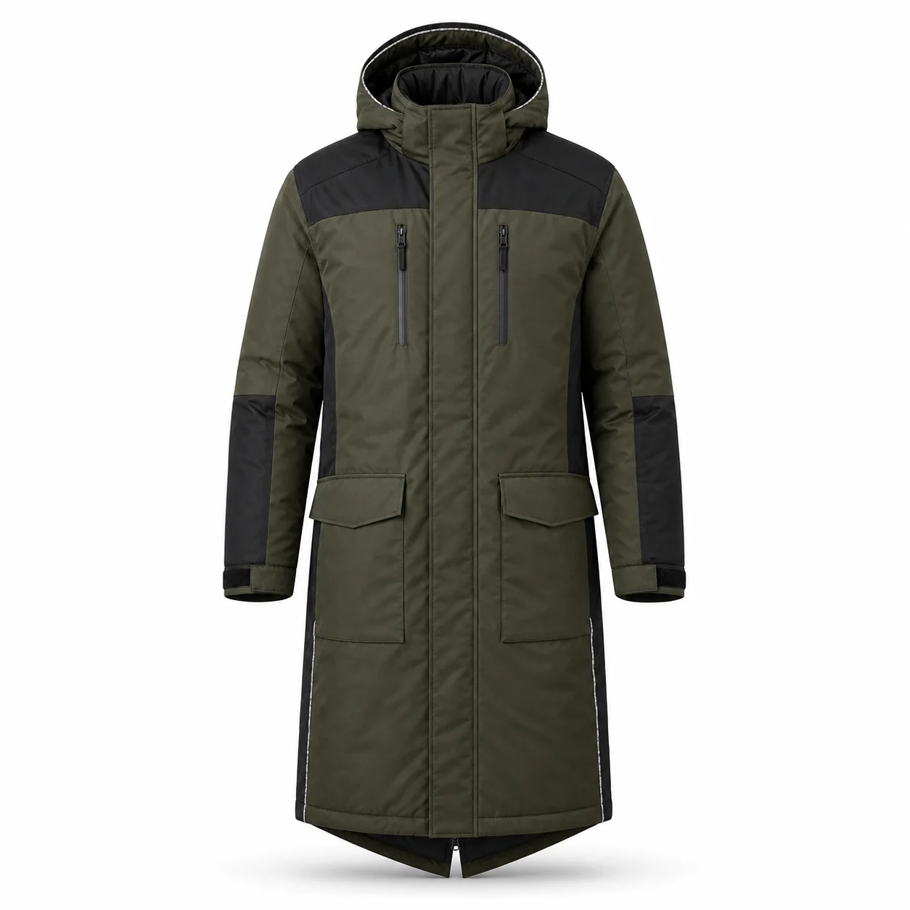

Haki Siyah Uzun Kapüşonlu İş Kabanı
Haki suya dayanıklı gövdesi, siyah takviye panelleri, sabit kapüşonu ve diz üstüne uzanan yalıtımlı kesimiyle soğuk hava saha çalışmaları için geliştirilen uzun iş kabanıdır.

Haki Siyah Uzun Kapüşonlu İş Kabanı üretim ayrıntıları
Haki Siyah Uzun Kapüşonlu İş Kabanı, kurumsal ekiplerde görev işlevi ve düzenli görünümü bir araya getirmek üzere planlanan İş montları modellerindendir. Haki | Siyah omuz ve kol panelleri | Diz üstü uzun kesim | Kapüşonlu | Dört cepli özellikleri modelin temel çerçevesini oluşturur.
Malzeme seçimi dış yüzey, astar ve dolgu üzerinden; çalışma ortamı, vardiya süresi, hareket ve bakım düzeni dikkate alınarak yapılır. Dikiş, cep ve kapama noktaları numunede kontrol edilir.
Logo ölçüsü ve konumu kumaş yüzeyiyle birlikte değerlendirilir. Onaylanan nakış veya baskı uygulaması model koduna bağlanarak tekrar sipariş standardı korunur.
Adet, beden dağılımı, renk, teslimat noktası ve hedef tarih yazılı paylaşıldığında kumaş ve üretim planı netleştirilir. Seri üretim yalnız onaylanan kapsam üzerinden ilerler.
Model özellikleri
- Haki
- Siyah omuz ve kol panelleri
- Diz üstü uzun kesim
- Kapüşonlu
- Dört cepli
Benzer ürünler
Lacivert Kapüşonlu Reflektörlü İş Montu
KT-MK-019 kodlu kurumsal üretim modelini inceleyin.
Ürün detayına gidin →Lacivert Reflektörlü İş Montu
KT-MK-021 kodlu kurumsal üretim modelini inceleyin.
Ürün detayına gidin →Petrol Antrasit Panelli Teknik İş Montu
KT-MK-022 kodlu kurumsal üretim modelini inceleyin.
Ürün detayına gidin →Sık sorulan sorular
Minimum sipariş kaç adettir?
Bu modelde özel üretim minimum siparişi 50 adettir.
Logo uygulanabilir mi?
Kumaşa göre nakış, DTF, transfer veya serigrafi uygulanabilir.
Farklı renk üretilebilir mi?
Kumaş ve aksesuar uygunluğuna göre kurumsal renk planlanabilir.
Numune hazırlanabilir mi?
Proje kapsamına göre seri üretim öncesinde numune hazırlanabilir.
Beden dağılımı nasıl belirlenir?
Çalışan listesi ve numune kontrolüyle beden dağılımı yazılı onaya alınır.
Teklif için ne gerekir?
Adet, beden, renk, logo, teslimat şehri ve hedef tarih paylaşılmalıdır.
KT-MK-025 için teklif alın.
Ürün, adet, beden ve logo bilgilerinizi paylaşın.